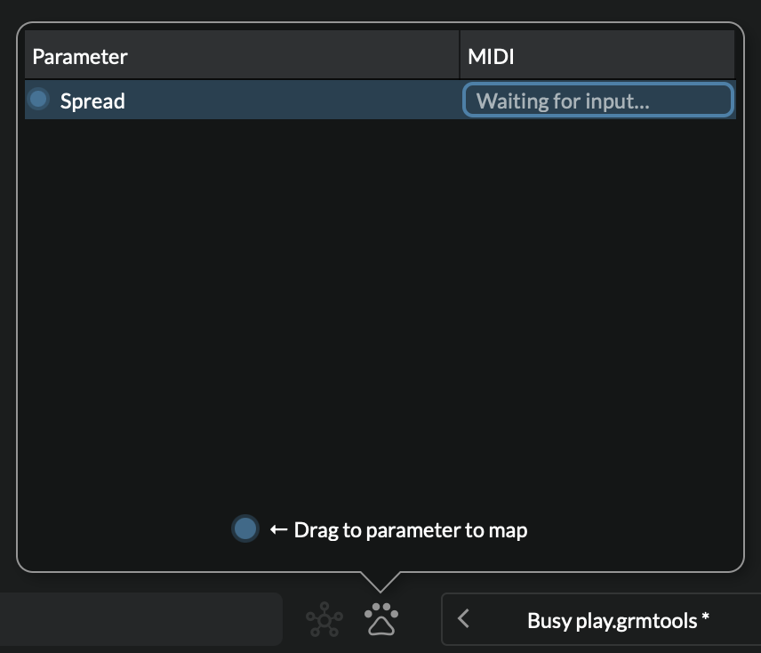
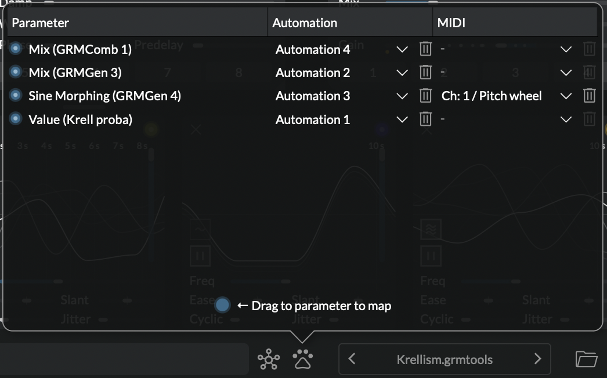

MIDI and automations
Atelier provides a simple way to map any parameter to your hardware MIDI controllers or keyboards. Similarly, any parameter can be automated from your DAW when used as a plug-in.
MIDI mapping
To use a MIDI device, enable it in the Audio and MIDI setup. If your device has motorized faders, LEDs or any visual feedback, select it in MIDI Output: then, any parameter change in the software should be reflected on the hardware.
Once your setup is ready:
- Right-click on the slider or button you want to control,
-
from the menu choose Learn MIDI. The Parameter mappings window pops-up with the selected parameter highlighted:

-
Move a fader, turn a knob or press a key. The MIDI event appears in the MIDI column of the mappings table. Click anywhere to accept, or click on the trash bin icon to abort.
-
A dashed blue outline is drawn around the control to indicate that it is mapped.
Atelier understands three kinds of MIDI messages:
- Control Changes (CC): their values (0-127) map to parameter values linearly.
- Pitch wheel: same thing.
- Individual MIDI notes: Each MIDI note is a separately assignable control. Note-on messages map to the value of their velocity; note-off messages map to the minimum value.
Notes
- If you want one controller to control several parameters just create a Control module and set it up to control several parameters.
- If you use Atelier as a plug-in and need MIDI mappings, you might need to set up your DAW to forward MIDI messages to the track.
- Classic VST instrument playing ("hit a key to make a note") is not supported. Yet.
Automations
Just like any other plug-in, any parameter in Atelier can be automated through your DAW. But because of its modular nature and the limitations of plug-in formats, automation first has to be manually enabled for each parameter you want to automate. This is two clicks away:
- right-click on the button or slider you want to automate, and
- click on Automate Parameter.
The control's outline is then highlighted with a dashed blue line.
Note
Internally, Atelier will automatically map the parameter to one of 64 available automation slot. Should you need to, you can see which automation slot it is mapped to by either right-clicking on the control or in the mappings window.
The parameter mappings window

The parameter mappings window is where MIDI and automations mappings are listed and can be edited. The automation column is only displayed in the plug-in.
Drag a cable from the bottom blue dot to quickly make a new row. Hovering over each row's filled blue dots shows a cable to the mapped control. Drag a new wire from it to re-map a row to a different parameter.